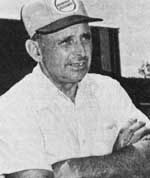

"Few people realize," said Ralph Engelken in the course of our Plowboy Interview with him and his wife, Rita, in MOTHER N0. 84, "that we've got all the wealth we need right beneath our feet."
It was a simple but characteristically perceptive and caring statement from the man who, over the past several years, had become a strong voice for organic agriculture and a symbol of the family farmer's fight to survive.
That fight took a direct toll on the Engelkens early in 1983, when the Federal Land Bank began foreclosure proceedings on the couple's 550-acre organic farm-one of the very finest examples of natural agriculture in the country and the product of nearly 30 years of love and beforedawn-to-after-dusk hard work from Ralph and Rita. We reported the details of the litigation threatening the Engelkens and their land in our May/June 1984 issue.
Now, with even greater sadness, which we know will be shared by all our readers, we must report that Ralph Engelken died on December 7, 1984.
He will be sorely missed, for this country's wealth is not only "in the soil . . . beneath our feet," but also in those rare individuals who live their love for the land, and who have the courage to stand up in defense of it.
Meanwhile, the effort to foreclose on the Engelken farm continues. There are no new developments to report as of this writing (mid-January). For information on what you can do to help, or to offer a contribution (for bookkeeping purposes, please make any donations in the form of a check payable to "Engelken Fund"), write to the Engelken Fund, c/o Acres, U.S.A., P.O. Box 9547, Kansas City, MO 64133.
|
 STAFF PHOTO |
|
|